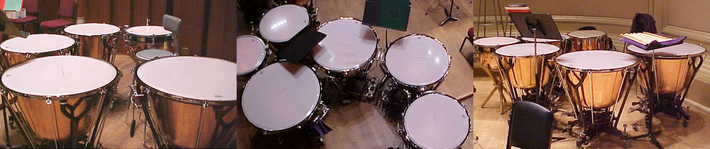
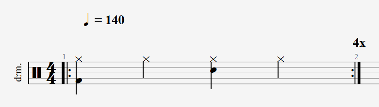
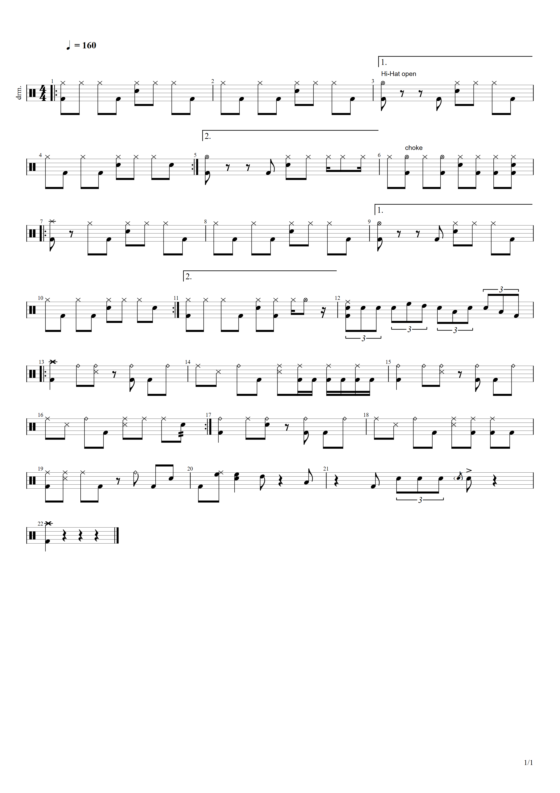
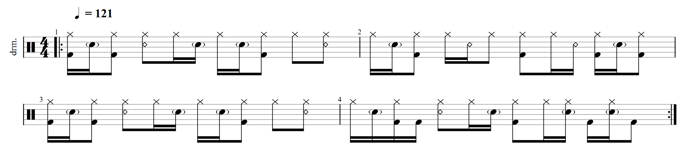
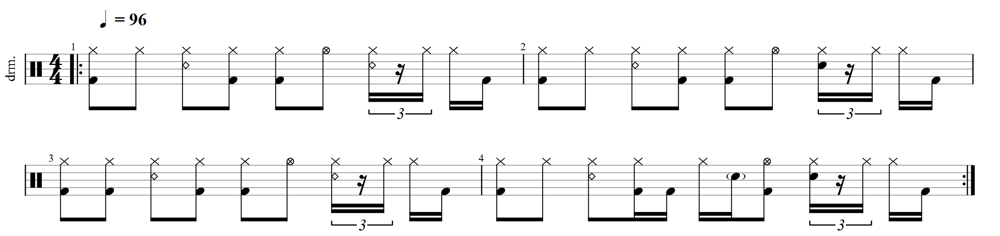
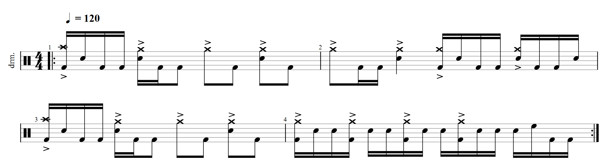
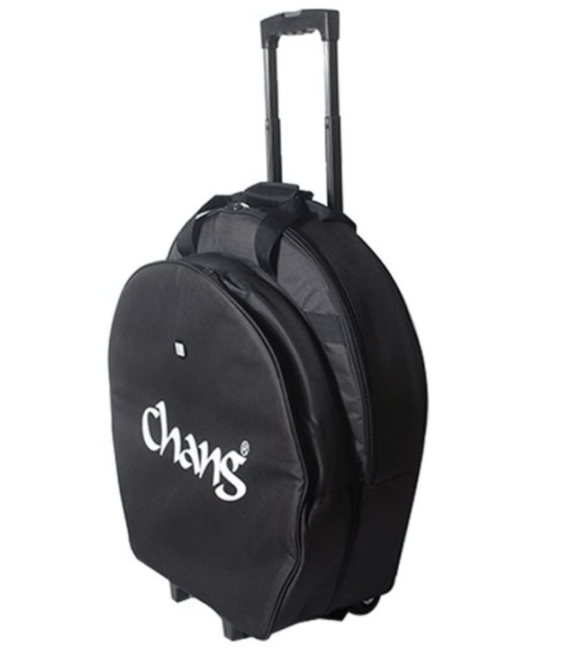

作为现代音乐支柱的爵士鼓（架子鼓）(1)：总论
动笔写这篇文章的时候，在两个（其实差不太多）的主标题之间犹豫了很久：
爵士鼓（架子鼓）全面综论
和
作为现代音乐支柱之一的爵士鼓（架子鼓）
纠结半天，最后觉得还是后一个标题更好：不仅仅是看起来更富有文学气息，同样也更突出重点：这一系列文章（如果我能不咕咕咕的话…）将围绕爵士鼓作为「现代音乐不可或缺的一部分」，特别地，是作为节奏型乐器，在现代音乐舞台上和其它乐器的显著差异组织和说明的。
为什么要写这篇文章呢？大概主要的动机是很早以前看到的一张梗图：
想来自己也无疑如此——一旦有人，无论是谁，即使只是不经意间，即便只是随口一说，提到有关爵士鼓、欧洲文学、科幻文学、（一些领域的）编程、jrock/jpop/ACG、英伦摇滚的事情，我肯定要说个没完没了了——而且多半会说得太多，弄得仅仅只是随口一提的无辜的可怜人不得不听我飞快、激情，兴许还两眼发光地讲个没完，无疑十分尴尬。可惜咱的爱好大概算是比较小众，这样的机会也少——即便有，强迫另一个人听我唠叨个不停，也未必就是什么愉快的体验。既然如此，把这些东西写下来，放个人博客里（应该还是相当相当少见的吧？谈论爵士鼓的个人博文… 我似乎就从来没见过🤔），既不麻烦人，也可一举满足我几乎无穷无尽的表达欲和「安利欲」，想写多长写多长：一举两得，岂不美哉？
于是就有了这篇文章：感兴趣的话题、热爱的事物，写起来想必是相当轻松的。本文主要是作为一位垃圾鼓手，以及jpop/jrock/ACG/brit rock/post rock爱好者的视角写成。部分术语、讨论尤其是历史性内容主要基于个人认识和经验，若有异见和补充，欢迎在评论区指出。
最后需要感谢我的——掰掰手指头，一共是——四位教师。身处一个并不发达的小城市，教师们也常去别处发展，这无疑是一件令人遗憾的事情；鼓手魏士朝（他的知乎；他的B站）是我第一位在网上认识的鼓手，与他的交流相当地「补完」了我对硬件的认识，尤其是收音录音相关的知识；（可能是大陆唯一的）鼓手自媒体鼓左言右质量卓越的评测和分享，是信息闭塞的时代背景下大陆打击乐资讯的重要媒介。
如前所述，本文——若无意外，若不又又又又咕咕咕咕咕咕咕咕咕——是一系列文章中的第一篇。除了「总论」，还会有「硬件」以及“软件”，如自学、练习的经验之谈云云，也会在以后的文章中涉及。
以下就是正文内容啦。抱歉，废话有些多，希望各位能学到些什么；也算是给我国贫瘠地令人震惊令人心疼的打击乐和摇滚乐做一点微不足道的贡献…
以下内容，尤其是历史相关的内容将会必不可少地涉及一些专业名词，但并不影响阅读和主旨大意，略过即可。对这些名词的解释说明将是后续文章的主要内容。
Photo by Gabriel Barletta on Unsplash.
爵士鼓（架子鼓）
现代意义上的爵士鼓（架子鼓，drum kit）——顾名思义，最初起源于爵士乐这一几乎是现代音乐鼻祖的音乐形式。在如今复杂纷繁的鼓组组合诞生之前，在军乐队及管弦乐中常见的脚鼓、三角铁、镲片等，通常由不同的乐手演奏。到19世纪中叶，出于节省预算、提高「四肢利用率」等各种各样的原因，以及“双重击鼓”（double-drumming）技巧的发明和流行，各类用途、各式音色的立式鼓被制作出来并形成组合，由更少的乐手演奏。如今交响乐团中常规化的“定音鼓”，或可看作现代爵士鼓的雏形。

如图所示，这样的组合最为明显的特点，即是没有踏板（pedal）。现代爵士鼓右手一只鼓棒，左手一只鼓棒，右脚底鼓（地鼓，大鼓；bass drum）踏板，左脚踩镲（Hi-Hat）踏板，可能还要带上底鼓双踩左踏板的“四肢占得满满当当”的配置，则要等到20世纪后：1909年，以其创始人命名的历史悠久的美国打击乐品牌Ludwig——该品牌的军鼓即便其响弦调节器（snare strainer，曾听到有大佬将这玩意戏称为“扳机”，xswl🤣🤣🤣）的难用程度臭名昭著，产品音色依然享有世界声誉——生产并发行了世界上第一款底鼓踏板系统，为现代爵士鼓的出现铺平了道路。到第一次世界大战时，由于现代音乐的变革、「乐队」，而非「乐团」形式军乐队的兴起和爵士乐广泛深刻的流行，使得现代意义上的爵士鼓出现在舞台上，并逐渐成为现代音乐中不可或缺的支柱。
爵士鼓作为现代音乐支柱
爵士鼓圈，流行一个经久不衰的笑话：
在乐队中跟鼓手发生冲突一般的结果只有两种，自己走人或者乐队解散。
还有另一个：
假设乐队没有主唱，可以玩后摇
假设乐队没有吉他，还有键盘
假设乐队没有键盘，还有吉他
假设乐队没有贝斯，根本无所谓
假设乐队没有鼓，那就不是乐队了，只能算个组合。
没有鼓手的乐队不能叫乐队。
又黑我贝斯。
虽说是个笑话，且无疑有严重的鼓手们乐此不疲地“自吹自擂”，“学什么乐器，就说什么乐器最难学”、“自己往自己脸上贴金”的嫌疑，可在某种程度上，这些也确实是事实。重点是，爵士鼓在现代音乐中的重要程度、支柱地位，与大众对爵士鼓缺乏了解和认识，是极其不成比例的。这一现象在国内尤其明显：从线下教学到硬件销售令人瞠目结舌的严重落后，不仅使大陆打击乐生态乏善可陈，更使得国内摇滚乐发展举步维艰。
爵士鼓在现代音乐中的支柱地位，与其作为常见的乐队配置中唯一的节奏乐器这一既成事实，是密不可分的。常见的五人组乐队，主唱，电吉他，电贝司，键盘，爵士鼓，无疑仅有爵士鼓完全缺乏“音调”这一表现维度，成为唯一的节奏乐器。在大量的乐曲演奏中，鼓手的首要职责即是保持乐曲速度的恒定和节奏的平稳，这对鼓手而言既是要求，亦是责任。对应于此，不少流行乐（常见于英伦摇滚（British rock music）），如Coldplay（酷玩）乐队、以及我最喜欢的乐队The Coronas，作品的爵士鼓节奏缓慢、单一、重复，起到的作用几乎仅仅是作为”节拍器“，为乐队中其它乐器提供重要基本的律动参考。
我曾看到一则评论，说一个月内就能教会完全零基础的初学者所有酷玩的歌曲——我大概也认同这则评论，这对大陆爵士鼓、以及各大酷玩乐队的爱好者们来说或许都是个好消息，哈哈~😉😉
但是，现代音乐中对于爵士鼓功能的低要求、浅认识，引起不少注重技术和「脉冲」（pulse）的鼓手的不满。不仅是鼓手——在编排乐曲时，各乐手常被告诫、也必须谨记在心的原则，就是 “要给主唱留空间”：鼓手所代表的「节奏」，和电吉他、电贝司、键盘等所代表的「伴奏旋律」，与主唱所代表的「主要旋律」之间的冲突，成为推动20世纪下半叶现代音乐变革的重要因素。
20世纪60年代，摇滚乐、金属乐的蓬勃发展促成了重型乐的广泛流行。在伴奏和主唱间难分难解的拉锯战中，摇滚乐、金属乐促成的音乐的重型化，无疑是一次重要的尝试。这一尝试的主旨和基调，那就是——大家都猛些。电吉他开始大量运用高度失真效果器（distortion）和高度过载效果器（overdrive）；主唱声音强有力，且经常大段使用对不少人（比如我）而言难以接受的嘶吼唱法（黑嗓、死嗓等），爵士鼓则将歌曲的速度提升到难以置信的新水平，动辄200bpm甚至250bpm的手上单击、脚上双踩，无疑是对鼓手激素水平、身体素质、听力保护措施以及演奏能力的前所未有的考验。
有没有其它的路线？这是重型乐方兴未艾之时，大家都在思考的重要课题。除了大家都猛踩油门加速加速加速加速，还有没有其它办法？这样的探寻又一次推动了现代音乐的革新。20世纪末，仍有争议的后摇滚（简称后摇，post-rock）的出现无疑是富有探索精神的音乐人们在这场拉锯战中又一次做出的新尝试：干掉主唱。完全摒弃人声的后摇滚强调律动和器乐，追求丰富、多乐器、多层次的旋律和颗粒感强、脉冲感强、层次分明的节奏，不需考虑人声的前提为该风格的乐手提供了更加自由的编曲空间，创造出的旋律递进感强，令人沉浸其中，不仅俘获了大批大批视旋律为第一要素的听众（比如我），更对其他的乐曲风格产生了不可估量的重要影响。
在现代音乐的发展时间轴上，爵士鼓始终在场，从未缺席，也不可能缺席。每一次乐曲的新变革都意味着爵士鼓的新「玩法」、对鼓手的新考验。作为或许硬件复杂度和硬件灵活度在所有常见乐器中最高的乐器，现代音乐的不断演变促使人们不断为爵士鼓发明新的技巧、工艺和配套硬件，也许这正是爵士鼓相关的硬件繁多冗杂地简直离谱的原因。
爵士鼓作为节奏乐器
爵士鼓（架子鼓）在现代音乐中的支柱地位，与其作为节奏乐器这一本质同样分不开。音调这一听觉维度的完全剥离，意味着如今在各类其它乐器中占比相当的所谓乐理，相较而言，在爵士鼓的教学和演奏中，通常占不到多少分量。以下是当今世界上最为权威的爵士鼓演奏认证机构Rockschool的最高级别认证（8级）中对爵士鼓“技巧练习”部分的要求：
明显的是，除了大量——有一些我也还不知道是啥，看来我要是直接去考RSL估计是要挂的了——描述节奏型（即所谓rudiment）的术语之外，常见于乐理论著中的各类术语，如音阶、调式、和弦、琶音，并未出现在当代最为权威的爵士鼓认证的认证说明文本中。与此对应，同样由该机构编撰的电吉他（electric guitar）认证手册中，则充斥着大量与乐理密不可分的叙述和专业名词：
“音阶”、“调式”、“琶音”、“和弦”，这样的文本对一位鼓手而言无疑恍若天书。值得注意的是，该机构编撰的木吉他（acoustic guitar）和流行键盘（keyboard）中同样包含大量极为相似的术语和考试环节，这是乐理知识在其它乐器中渗透广泛，且相互关联的明证。
顺带一提，几乎人尽皆知的通常意义上的所谓英皇（英国皇家音乐学院联合委员会，ABRSM） 并不提供，亦并不负责包括爵士鼓在内的现代音乐乐器的级别认证。通常而言英皇是在古典音乐，或至少是古典音乐乐器领域内享有世界声誉的级别认证机构——现代音乐乐器与其古典“对应”之间，如电吉他对原生吉他，流行键盘对钢琴，通常差异极大，演奏技巧、级别认证形式很难，也不会保持一致。大家在爵士鼓语境下常提到的所谓“英皇”，不过是对另一家总部同样位于英国、同样顶尖权威的现代音乐乐器级别认证机构Rockschool（RockSchool Limited, RSL）的错认。该机构为现代音乐乐器，如电吉他、电贝司、爵士鼓、流行键盘和一些相关领域，如音乐制作（music production）、声乐（vocal）等提供世界级、权威的级别认证。RSL与ABRSM无任何隶属或合作关系，是两家完全分离、独立的认证机构。
再顺带一提，爵士鼓领域两家顶尖的认证机构除了Rockschool，另外一家则是伦敦圣三一学院（Trinity College London，TCL）。这两家机构编排并录制的级别认证曲目及其demo技巧性强，风格意识明显，是当代鼓手精进之路上少有的质量优异的练习材料。
要在单一的节奏维度上表现风格、表达情感，这对每一位鼓手而言都是挑战。节奏如何表现风格？节奏如何表达情感？自现代意义上的爵士鼓出现以来，人们一直在思考。个人认为（以下均为个人看法和认识，若有补充或疑问，欢迎在评论区指出），其关键在于如何编排节奏，或者说如何控制节奏的疏密程度，来为乐曲提供节奏层次上必不可少的「脉冲」（pulse）——这个在上文多次提到但又为做解释的词终于又出现了。
乐曲要进行，必须有一波波向前涌动的冲力。考虑一个简单的节奏：

试听：
这就是大家耳熟能详的“动次打次”——问题在于，这样的节奏在乐曲中多见吗？并不。事实上，这样的节奏在乐曲中几乎是不可能见到的：因为这样的节奏缺少脉冲。一下底鼓，一下踩镲，一下军鼓，一下踩镲，线性、均匀、毫无变化，毫无起伏。乐曲在这样和机械节拍器几乎别无二致的节奏中无法进行。乐曲需要脉冲，而如何创造这种脉冲则是爵士鼓演奏中风格差异的主要体现。再听一段demo：

试听：
这段demo虽风格特征仍不够明显（除了显然的half-time节奏型以及一丝丝若隐若现的R&B味儿），但无疑已比上边那段好上了不少。重点在于这段demo是有起伏的，有脉冲的——从谱中和试听中我们或许可以隐约意会到这种脉冲的营造方式：分布不均匀的音符，时值变化的音符带来速度的脉冲；节奏镲（Ride）在击打镲帽和击打表面间的切分演奏带来“叮，(叮)叮，(叮)叮，叮”的律动感；基本节奏型之外，每四小节出现的加花（fill）通过急促的三连音过嗵鼓（筒鼓，Tom-tom drum）提示律动的切换和乐曲的转折。
如前所述，不同风格的乐曲有营造脉冲的不同方式。爵士乐（Jazz）通过军鼓边击（Rim-shot）、正常击和轻击间的音色区别来营造起伏的跳跃感：

试听：
放克乐（Funk）尤其喜欢在每一小节的第三拍添加（简单的乐曲是）前八后十六或（较难的乐曲则是）shuffle：

试听：
如前所述，快得离谱、脚发麻手抽筋、两脚当双手使的离谱玩法创造的密集、紧张的鼓点，是如金属乐（重金属摇滚，Metal）一类的重型乐的典型特征：

试听：
相信各位已经明白我要说什么了：作为节奏乐器的爵士鼓，除了重要基本的“节拍器”功用之外，通过纷繁的外围硬件和多样的演奏技巧为乐曲提供脉冲，同样是爵士鼓的重要意义。不同风格的乐曲在声乐和器乐间选择了不同的平衡点，这也要求爵士鼓依据风格的不同，既要变化脉冲的强度，又要变化脉冲的表达形式。军鼓技巧、节奏镲技巧，以及各式外围硬件（如反镲（china——关于这玩意为啥叫「china」又是一则故事）、水镲（splash），牛铃（cowbell）、鼓刷（brush））为爵士鼓演奏增添的新的变量，持续推动乐曲风格的多样化和演奏本身的不断演进。
最后是几首来自RSL和TCL的练习曲demo；均为风格演奏，其中一些为专门谱曲，另一些为现有曲子的翻奏，但特别突出了器乐。通过这几首节奏明显的风格演奏demo，或许不同风格的律动感能够更加明显。
注意音频文件较大，一些网络环境下需要耐心等待加载。
Lead Sheet - 摇滚（Rock）：
大量出现了正拍的底鼓敲击、军鼓边击，密集的过嗵鼓加花和独段的军鼓solo；build-up段落亦有长段的密集军鼓敲击、重音移位敲击和长滚奏（long roll）。
Crazy In Love - 节奏布鲁斯（R&B）
Freightshaker - 蓝调（Blues）
急促但又极短、 几乎每拍都有 一下的踩镲 “(嚓)嚓” 声和节奏镲 “(叮)叮”声推动着整首乐曲，并在各段落间通过长过嗵鼓和滚奏衔接。
Full English Breckerfest - 放克（Funk）
注意主歌（Verse）段落每小节第三拍必定出现的开镲（open hi-hat）和切分音。
爵士鼓作为相当昂贵的乐器
鼓手的培养成本在大陆是相当高昂的。这也是大陆鼓手稀少、重型乐不发达的重要原因。
大陆的打击乐生态是相当差的。极少数城市的琴行有面向销售的实体真鼓或电子鼓，如英国 Drum Center of Portsmouth 一类，提供数百款鼓棒、上百套鼓组（drum kit）、上百种军鼓、数十种脚踏和数千款 镲片（Cymbal） 的打击乐中心，在国内，即便是一线城市，可能连一家都没有。大量鼓手购买硬件时不经思考，仅靠教师推荐或道听途说，购买价格高昂又实用性低的成套镲片—— 老板，给我直接来一套大K！钱我有的是！ ——丝毫不考虑镲片的高度客制化性质，纯图方便，导致大陆市场长期被大量老旧的套镲型号占据，高端型号（如Instanbul Mantra, Istanbul Anniversary, PAISTE Signature）不在国内流通；一些较为罕见的尺寸（如25+寸节奏镲）和厚度（如Extra Thin）在国内根本无法买到，需要花高价在 Amazon 上海淘或去日本购买。
一系列因素导致大陆的打击乐硬件成本高昂。除开极差的生态，乐器行业本身的高利润率也是其一——一些型号的镲片、套鼓，所谓的渠道价（“发价”）甚至仅为流通价格的一半。对于爵士鼓这样的大型乐器、极高音量乐器，首先，在房价无上限的城区，光有个能放置一套爵士鼓的房间就意味着不可小觑的经济实力…… 除此以外，需要相当完备的隔音、减震、吸音措施才能不招致邻居的反复投诉：在常规密集规划的高层居民楼，装修出一间不打扰邻居的鼓房几乎是不可能的事情。
爵士鼓教材稀缺，世界范围内都是如此。面向自学编纂的爵士鼓教材更是闻所未闻——绝大多数教材仅覆盖某一演奏方面或某一特定的乐曲风格，无法作自学材料使用。大陆相关教材译本发行量相当少，导致原版价格高昂，影印版泛滥。绝大多数鼓手都是跟或专业或业余的打击乐教师学习，这意味着不菲的学费。
系统地学习爵士鼓需要毅力和高昂的时间成本。失去音高的爵士鼓的基本功练习极其枯燥，进步缓慢，远不是吉他“爬格子”之枯燥程度所能比较的；大量练习仅是跟着节拍器的单纯敲击，此类纯为速度的肌肉锻炼，需要耗费大量时间，且肌肉疲劳带来的拉伤和酸痛难以忍受。
一些爵士鼓演奏技巧有一定的危险性。真鼓的练习一定要有听力保护措施（便宜的3M耳塞或入耳式耳机均可），否则将造成听觉敏感度的显著降低（但不致听力障碍——希望如此）。一些技巧，如换手捏镲、手动制音、边击、交叉手过嗵鼓、交叉手扇镲等，可能刮伤或蹭伤手指：练习或彩排时由于激素水平过高受伤事后许久才发觉是家常便饭。几年前我曾经有一次彩排时用力过猛，右手中指第二指节直接刮掉一块肉，下台后经同学提醒才发现鼓棒上都沾了血，到现在那块地方的皮肤还是凸起来一块，而且很粗糙……
爵士鼓录音不便。真鼓音量高，频率广，一般的收音设备（手机，平板电脑等）无法处理如此高音量、广频率的信号，收音效果很差。鼓手为保护听力和录音常配有完备的鼓麦、调音台和监听耳机，这既是一笔不菲的开销，又是相当麻烦的事情——7鼓组鼓麦需要七条独立的线缆，需要大量时间和耐心架设并调试相关设备。舞台上，由于环境不可预料、吸音或混响配置不佳还可能出现回声明显、音响啸叫等各种问题。
爵士鼓沉重。中低端往上的鼓组均为钢制结构，一些支架可重达五千克，钢腔军鼓同样重达数千克；演奏需要的镲片（通常必要四组共五张，视演艺效果所需可能还需若干张效果镲、反镲、副节奏镲等）总重量可重达数十千克，以致需要拉杆式的镲片车才能搬运。我自己搬一套鼓估计是肯定不行的……😥😥

除此以外，与爵士鼓有关硬件的介绍和练习等技巧的经验分享将会在后续咕咕咕咕咕咕咕咕咕咕咕咕中一一说明。
就这些了
本文就这么多，总的来说已经相当长了，近7000字，无疑又一次刷新了我的单篇文章字数记录。两天肝出来这么巨长的一堆东西，果然爱好才是第一驱动力呢……
对了，如果你也是鼓手的话，欢迎在评论区留下你的联系方式，或在左侧（下侧）的侧边栏中找到我的联系方式——我还有很长很长的路要走，很想认识一些前辈，结识一些朋友。
就这些了。任何讨论欢迎发在评论区，我会第一时间回复；若有其它问题（如本文中使用的一些demo的完整谱子等），请私下联系我。
作为现代音乐支柱的爵士鼓（架子鼓）(1)：总论